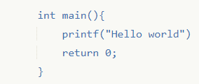
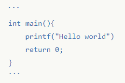

什么是Markdown?
Markdown是一种轻量的标记语言,允许人们以易读易写的纯文本方式编写文档，并可以轻松的转换为有效的HTML文档，许多网站及应用都使用Markdown或其它衍生版本让用户更专注于文档的写作，而不需要烦恼于排版、格式等琐碎的事情，你大可以在轻度写作上，告别word这样繁琐的工具。
怎么使用Markdown?
我需要怎样的编辑器？
Markdown无需任何编辑器，你可以在任意文档编辑器使用Markdown语法，即使不经过处理，纯文本的Markdown也拥有不错的阅读体验，如果你需要即时的预览的Markdown语法效果，你可以使用以下几个在线的编辑器
- Cmd Markdown 国内一款不错的Markdown在线编辑器
- 简书 需要注册一下，也支持Markdown
- dillinger 很漂亮的一个在线编辑器，还支持许多云端备份，不过国内访问很慢，中文支持也不好，如果你在国外还是不错的。
Makedown的具体语法是怎样的？
Makedown的语法是相当简单的，你至多只需要十分钟就能掌握Markdown语法，我推荐你打开上述的在线编辑器，一起来编辑看看效果！
1. 我想要一个标题？
你可以这样输入
# 标题
效果：
标题
嘿！看看你是否正确的在#号后加了空格？虽然许多编辑器支持不带空格的写法，但标准的Markdown标签里应该加上空格。
2. 我想要一个多级标题？
你可以这样输入
# 一级标题
## 二级标题
### 三级标题
效果:
一级标题
二级标题
三级标题
3. 标题有了，段落（正文）又该怎么写？
不需要怎么写！Markdown并不需要你做多余的工作，你只需要自然的回车换行，即是下一个段落。
由若干“来自GitHub、Reddit、Stack Exchange以及开源社区的重要代表”组成了一个“小型非公开工作组”，打算将Markdown标准化，并为了进一步的改进开放该标准。工作组于近日发布了Standard Markdown，随之有专门的网站standardmarkdown.com，但发布几天后应Gruber的要求被迫关闭了。
在一则发给Atwood的私信中，Gruber说标准使用了Markdown“令人愤怒”，要求标准化工作组重新命名项目，关闭standardmarkdown.com并且道歉。对于名字，Gruber建议工作组可以使用比如Strict Markdown或Pedantic Makrdown类似的名字。Atwood希望有其他的名称，在等待Gruber的反馈一天无果后，将其重命名为Common Markdown。
效果：
由若干“来自GitHub、Reddit、Stack Exchange以及开源社区的重要代表”组成了一个“小型非公开工作组”，打算将Markdown标准化，并为了进一步的改进开放该标准。工作组于近日发布了Standard Markdown，随之有专门的网站standardmarkdown.com，但发布几天后应Gruber的要求被迫关闭了。
在一则发给Atwood的私信中，Gruber说标准使用了Markdown“令人愤怒”，要求标准化工作组重新命名项目，关闭standardmarkdown.com并且道歉。对于名字，Gruber建议工作组可以使用比如Strict Markdown或Pedantic Makrdown类似的名字。Atwood希望有其他的名称，在等待Gruber的反馈一天无果后，将其重命名为Common Markdown。
4. 我想引用其他人的话语/句子该怎么办？
> 鹅，鹅，鹅，曲项向天歌。
白毛浮绿水，红掌拨清波。
————骆宾王
效果：
鹅，鹅，鹅，曲项向天歌。
白毛浮绿水，红掌拨清波。
————骆宾王
你还可以多级嵌套这些引用：
> 鲁迅说：
>> 鲁迅没有说过这句话
————鲁迅
效果：
鲁迅说：
鲁迅没有说过这句话
—————鲁迅
5. 我需要一个列表？
*《如果有妹妹就好了》
*《小林家的妹抖龙》
*《紫罗兰永恒花园》
*《罗小鸽战记》
效果：
- 《如果有妹妹就好了》
- 《小林家的妹抖龙》
- 《紫罗兰永痕花园》
- 《罗小鸽战记》
如果你愿意，你还可以使用+或-代替*号，它们的作用是等同的。
如果你需要一个有序列表，你可以这样做：
1. 先看看3
2. 看看4写的什么
3. 再看看2
4. 回去看看1
效果：
- 先看看3
- 看看4写的什么
- 再看看2
- 回去看看1
如果你愿意，你也可以不按顺序写上标号，这也能够被正常解析。
4. 先看看3
2. 看看4写的什么
1. 再看看2
4. 回去看看1
效果：
4. 先看看3
2. 看看4写的什么
- 再看看2
- 回去看看1
你还可以做一个代办事项列表
- [ ] 不勾选
- [x] 勾选
效果：
- 不勾选
- 勾选
我需要在文章中插入链接？
行内式：
参考式：
[Gayhun][1]
[1]:http://github.com
释义：
- 行内式：
[显示的文本](点击文本访问的链接)
- 参考式
[显示的文本][自己定义的id]
[自己定义的id]:链接
参考式基本和行内式没有差别，只是可以预先定义要显示的文本。
效果：
Gayhub
如果你需要鼠标悬停时给出提示信息，你可以这样
[B站](https://bilibili.com "点此访问bilibili")
释义：
[显示的文本](点击文本访问的链接 “鼠标悬停时的提示信息”)
效果
B站
这样写还是有点麻烦？
在显示文本和链接一致的情况下，你只需
<https://bilibili.com>
插入图片怎么办？

释义：
[ 图片未加载成功时的帮助文本 ](图片的链接 “鼠标悬停时的提示信息”)
图片也拥有和链接相似的参考式写法。
效果：
我想在文章中显示代码？
1. 原生风格：
首行缩进4个空格或是一个制表符

效果：
int main(){
printf("Hello world!");
return 0;
}
2. Github风格
使用 ``` 包裹代码

效果：
1 | int main(){ |
我想用表格来展示？
英雄名称| 击杀 |死亡| 助攻
:--|:--:|--:| --:
斧王|1|50|5
宙斯|5|5|5
炸弹人|56|5|41
释义：
第一行代表表头，第二行代表对齐方式控制，第三行开始是内容。
其中 :--代表左对齐，--:代表右对齐，:--:代表居中对齐。
效果：
| 英雄名称 | 击杀 | 死亡 | 助攻 |
|---|---|---|---|
| 斧王 | 1 | 50 | 5 |
| 宙斯 | 5 | 5 | 2 |
| 炸弹人 | 56 | 5 | 41 |
我想让我的文本更有表现力？
斜体
*这是一串斜体*效果：
这是一串斜体
粗体
**这是一串粗体**效果：
这是一串粗体
单独显示一串代码
`Hello world`效果：
Hello world给文字加上删除线
~~这是要被删除的文字~~效果：
这是要被删除的文字添加水平线
***效果：
我想使用的字符字被看包括在Markdown语法内？
你可以使用在你想使用的字符前添加转义符\
\\
效果：
\
你可以对这些字符进行转义
| 字符 | 名称 |
|---|---|
| |反斜线 | |
| ` | 反引号 |
| * | 星好 |
| _ | 底线 |
| {} | 花括号 |
| [] | 方括号 |
| () | 括号 |
| # | 井号 |
| + | 加号 |
| - | 减号 |
| , | 英文句点 |
| ! | 感叹号 |